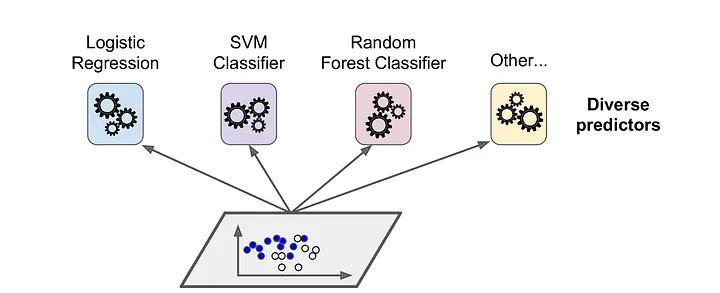

AI & DS 2
NN

CNN *
CNN is deep learning algorithm which can take input as image assign importance to various object in the image and able to differentiate one from another.

Components of CNN architecture:
- Feature Extraction:
- Input Layer:
- This layer passes data directly to fist hidden layer.
- Here the data is multiplied by the first hidden layers weight.
- Convolution Layer:
- It takes an image and slides a small window, called a kernel, over it.
- As the kernel moves, it looks for specific features, like edges or colors, by doing some math called a dot product between the kernel and parts of the image.
- This process creates a new picture called a feature map.
- By stacking multiple convolution layers, the CNN can learn to recognize more complex patterns, helping it identify objects in pictures more accurately.
- Pooling Layer:
- Pooling layer summarize the features present in the reign of the feature map generated by convolution layer.
- It has 2 types:
- Max Pooling
- Max pooling works by sliding a small window (or kernel) over the feature map and selecting the maximum value within that window.
- This process helps to keep the most significant features of the image, such as edges and textures, while reducing the overall size of the data.
- Average Pooling
- Average pooling, on the other hand, calculates the average value of all the pixels within the same window.
- This method helps to smooth out the feature map and can be better for capturing general patterns rather than just focusing on strong features.
- Max Pooling
- Input Layer:
- Classification
- Fully Connected Layer
- This layer is responsible for integrating all the features learned from earlier convolution and pooling layers.
- It captures complex patterns and relationships in the data by applying weights and biases to these features.
- Output: The output component of a CNN is often represented by a final layer that produces the prediction results.
- Fully Connected Layer

LSTM

Full form of LSTM is Long Short Term Memory
Drawbacks of RNN:
- RNN goes in loop again and again which results in large update and loop may goes into infinity.
- Values weight become too large and the result is overflow of data.
LSTM network are type of RNN capable of Learning order dependencies for lang periods in sequence prediction problem.
This is a behavior requires in complex problem domain like speech recognition machine translation.
Application of LSTM:
- Speech Recognition
- Machine Translation
- Time Series Prediction
- Healthcare Applications

RNN
RNN was replace with FFN (Feed Forward Network) due to some drawback of FFN.
Drawbacks of FNN:
- No memory
- Sequential data
RNN is a type of neural network where the output from previous step are fed as input to current step in order t o predict the output of the layer.
RNN Architecture

In the diagram shown above X is Input layer, H is hidden layer and X is output layer, A, B, C are Network parameters used to improve Output of the model RNN can be of 1-1 RNN 1 to many RNN, many-many RNN.
Application:
- Generating Text: Find the probability of next word.
- Machine Translation
- Speech Recognition
- Generating Image Description
- Chatbot

Autoencoder

Autoencoder are specific types of speed encoder network where input is same as that as output.
It is unsupervised manner hence there is no need to label data.
It is used basically for image compression, image denoising and generation of image data.
In architecture of Autoencoder consist of 3 components:
- Encoder: It compresses the train set and test set input data into an encoded representation.
- Code: A module that contains compressed knowledge representation hence it is most important part of network.
- Decoder: This helps a network to decompress the knowledge representation data back to its original representation.
Types of Autoencoder
- Denoising Autoencoder: Designed to reconstruct clean data from corrupted or noisy inputs.
- Sparse Autoencoder: Similar to under-complete Autoencoders, but it encourages sparsity in the hidden layer activations. This means that not all neurons are activated at once, allowing different neurons to specialize in recognizing different features of the input data.
- Deautoencoder: It consist of 2 identical belief network one is for encoding other is for decoding.
- Contractive Autoencoder: The objective of this encoder is to have robust representation which is less sensitive for small variation.
- Uncomplete Autoencoder: It focuses on capturing the most important features of the data.

Application of DS
- Healtcare:
- Prediction of diseases
- Diagnosis
- Exploring treatments
- Drug development
- Tracking of Medical Images (X-Ray, MRI, CT Scan)
- Self Driving Car
- Example: Tesla, Waymo, Comma
- Applying break system automating
- Detecting of obstacles
- Finding best possible routes
- Data Science in Gaming
- Effects
- Graphics
- AR
- Design purpose
- Image Recognition
- Image Classification
- Sentiment Analysis (Emotions)
- Recommendation Engine
- Example: Flipkart, Spotify, Netflix, Amazon
- Logistics
- Tracking of goods/production
- Risk Calculation
- Fraud Detection
- Credit card fraud detection
- False transaction History
- Speech Recognition
- Google Assistant
- Siri
- Alexa
- AR (Argument Reality)
- Pokemon GO game
- Snapchat
- Finance
- Risk Calculation
- Decision Making
- Cyber Security
- Prevention & detection
- Identification of Malware
- Travel
- Google Maps
- Recommendation of Hotels
- Time Management
- Route Identification
Ensemble methods
Ensemble learning is a powerful machine learning technique that improves predictive performance by combining multiple models, known as "base learners" or "weak learners."
The core idea is that by aggregating the predictions of several models, the ensemble can achieve better results than any single model alone.

Types of Ensemble Classifiers

- Bagging
- Bootstrap Aggregating is the full form of Bagging.
- Bagging generates multiple classifiers that are combined using average or majority voting.
- Boosting
- Boosting is done in a sequential manner which focus on weights on the dataset.
- Ada Boosting
- It is algorithm inside of Boosting.
- It stands for Adoptive Boosting
- It combines multiple weak classifier into one strong classifier.
- Algorithm
- Initialize one data
- Assign equal weight to each item.
- Provide this input to the model and identify from wrongly classified data points.
- Increase the weight of wrongly classified data points & again start processing the data until the results are satisfied.
- Random Forest

- Instead of relying on one decision tree, the random forest takes the prediction from each tree and based on the majority votes of predictions, and it predicts the final output.
Confusion matrix *

Accuracy:
$${TP+TN \over P+N} = {100 + 50 \over Total} = {150 \over 165} = 0.90 = 90\%$$
Recall:
$${TP \over TP + FN} = {100 \over 100+5} = {100 \over 105} = 0.95 = 95\%$$
Specificity
$${TN \over N} = {50 \over 55} = 91\%$$
Precision
$${TP \over TP + FP} = {100 \over 100 + 10} = {100 \over 110} = 0.90 = 90.90\%$$
F1 Score
$$ {2 \times Precision \times Recall \over Precesion + Recall} = {2 \times 0.90 \times 0.95 \over 0.90 + 0.95} = {1.71 \over 1.85} = 0.9243 = 92.43\% $$

Confusion Matrix Mutli Class Classificaton

Apple

Precision
$${TP \over TP + FP} = {7 \over 7 + 17} = {7 \over 24} = 0.29 = 29\%$$
Recall
$${TP \over TP + FN} = {7 \over 7 + 14} = {7 \over 11} = 0.6363 = 63\%$$
F1 Score
$$ {2 \times Precision \times Recall \over Precesion + Recall} = {2 \times 0.29 \times 0.63 \over 0.29 + 0.63} = {0.3654 \over 0.92} = 0.3971 = 39.71\% $$
**Orange

Precision
$${TP \over TP + FP} = {2 \over 2 + 4} = {2 \over 6} = 0.33 = 33\%$$
Recall
$${TP \over TP + FN} = {2 \over 2 + 10} = {2 \over 12} = 0.16 = 0.16\%$$
F1 Score
$$ {2 \times Precision \times Recall \over Precesion + Recall} = {2 \times 0.33 \times 0.16 \over 0.33 + 0.16} = {0.1056 \over 0.49} = 0.21 = 21\% $$
Banana

Precision
$${TP \over TP + FP} = {1 \over 1 + 5} = {1 \over 6} = 0.1666 = 17\%$$
Recall
$${TP \over TP + FN} = {1 \over 1 + 12} = {1 \over 13} = 0.076 = 7.69\%$$
F1 Score
$$ {2 \times Precision \times Recall \over Precesion + Recall} = {2 \times 0.076 \times 0.166 \over 0.076 + 0.166} = {0.025 \over 0.242} = 0.1033 = 10\% $$
Implement AND, AND NOT and XOR function using McCulloch-Pitts neuron. *
AND
Step. 1) Construct a truth table for AND
| X1 | X2 | Y |
|---|---|---|
| 0 | 0 | 0 |
| 0 | 1 | 0 |
| 1 | 0 | 0 |
| 1 | 1 | 1 |
Assume the weights are initialized to $W{11} = W{21} = 1$
Calculate the net input:
| $X_1X_2 =$ | $X_1W_1 +$ | $X_2W_2$ | = $Ans$ |
|---|---|---|---|
| (0, 0) | 0 x 1 | 0 x 1 | 0 |
| (0, 1) | 0 x 1 | 1 x 1 | 1 |
| (1, 0) | 1 x 1 | 0 x 1 | 1 |
| (1, 1) | 1 x 1 | 1 x 1 | 2 |
Step 2) Where,
- n = number of Input
- w = positive Input weight
p = negative Input weight
0 >= nw - p 2 >= 2(1) - p 2 >= 2
AND NOT
Step. 1) Construct a truth table for AND NOT
| X1 | X2 | Y |
|---|---|---|
| 0 | 0 | 0 |
| 0 | 1 | 0 |
| 1 | 0 | 1 |
| 1 | 1 | 0 |
Assume the weights are initialized to $W{11} = W{21} = 1$
Calculate the net input:
| $X_1X_2 =$ | $X_1W_1 +$ | $X_2W_2$ | = $Ans$ |
|---|---|---|---|
| (0, 0) | 0 x 1 | 0 x 1 | 0 |
| (0, 1) | 0 x 1 | 1 x 1 | 1 |
| (1, 0) | 1 x 1 | 0 x 1 | 1 |
| (1, 1) | 1 x 1 | 1 x 1 | 2 |
Assume the weights are initialized to $W{11} = 1, W{21} = -1$
Calculate the net input:
| $X_1X_2 =$ | $X_1W_1 +$ | $X_2W_2$ | = $Ans$ |
|---|---|---|---|
| (0, 0) | 0 x 1 | 0 x -1 | 0 |
| (0, 1) | 0 x 1 | 1 x -1 | -1 |
| (1, 0) | 1 x 1 | 0 x -1 | 1 |
| (1, 1) | 1 x 1 | 1 x -1 | 0 |
Step 2) Where,
- n = number of Input
- w = positive Input weight
p = negative Input weight
0 >= nw - p 1 >= 2(1) - (1) 1 >= 2 - 1 1 >= 1
XOR
Step. 1) Construct a truth table for AND
| X1 | X2 | Y |
|---|---|---|
| 0 | 0 | 0 |
| 0 | 1 | 1 |
| 1 | 0 | 1 |
| 1 | 1 | 0 |
Assume the weights are initialized to $W{11} = W{21} = 1$
Calculate the net input:
| $X_1X_2 =$ | $X_1W_1 +$ | $X_2W_2$ | = $Ans$ |
|---|---|---|---|
| (0, 0) | 0 x 1 | 0 x 1 | 0 |
| (0, 1) | 0 x 1 | 1 x 1 | 1 |
| (1, 0) | 1 x 1 | 0 x 1 | 1 |
| (1, 1) | 1 x 1 | 1 x 1 | 2 |
Assume the weights are initialized to $W{11} = 1, W{21} = -1$
Calculate the net input:
| $X_1X_2 =$ | $X_1W_1 +$ | $X_2W_2$ | = $Ans$ |
|---|---|---|---|
| (0, 0) | 0 x 1 | 0 x -1 | 0 |
| (0, 1) | 0 x 1 | 1 x -1 | -1 |
| (1, 0) | 1 x 1 | 0 x -1 | 1 |
| (1, 1) | 1 x 1 | 1 x -1 | 0 |
Step 2) $\therefore Z = X_1\bar{X_2} + \bar{X}X_2$
| X1 | X2 | Z1 |
|---|---|---|
| 0 | 0 | 0 |
| 0 | 1 | 0 |
| 1 | 0 | 1 |
| 1 | 1 | 0 |
| X1 | X2 | Z2 |
|---|---|---|
| 0 | 0 | 0 |
| 0 | 1 | 1 |
| 1 | 0 | 0 |
| 1 | 1 | 0 |
Step 3) $Z_1 = X_1 \bar{X_2}$,Weight = (1, -1)
| $X_1X_2 =$ | $X_1W_1 +$ | $X_2W_2$ | = $Ans$ |
|---|---|---|---|
| (0, 0) | 0 x 1 | 0 x -1 | 0 |
| (0, 1) | 0 x 1 | 1 x -1 | -1 |
| (1, 0) | 1 x 1 | 0 x -1 | 1 |
| (1, 1) | 1 x 1 | 1 x -1 | 0 |
0 >= nw - p
1 >= 2(1) - 1
1 >= 1
Step 4) $Z_2 = \bar{X_1}X_2$, Weight = (-1, 1)
| $X_1X_2 =$ | $X_1W_1 +$ | $X_2W_2$ | = $Ans$ |
|---|---|---|---|
| (0, 0) | 0 x -1 | 0 x 1 | 0 |
| (0, 1) | 0 x -1 | 1 x 1 | 1 |
| (1, 0) | 1 x -1 | 0 x 1 | -1 |
| (1, 1) | 1 x -1 | 1 x 1 | 0 |
0 >= nw - p
1 >= 2(1) - 1
1 >= 1
Step 5) $Y = Z_1$ or $Z_2$
| X1 | X2 | Y | Z1 | Z2 |
|---|---|---|---|---|
| 0 | 0 | 0 | 0 | 0 |
| 0 | 1 | 1 | 0 | 1 |
| 1 | 0 | 1 | 1 | 0 |
| 1 | 1 | 0 | 0 | 0 |
Assume the weights are initialized to $V_1 = V_2 = 1$
$V_1 = V_2 = 1$
| $Z_1Z_2 =$ | $Z_1V_1 +$ | $Z_2V_2$ | = $Ans$ |
|---|---|---|---|
| (0, 0) | 0 x 1 | 0 x 1 | 0 |
| (0, 1) | 0 x 1 | 1 x 1 | 1 |
| (1, 0) | 1 x 1 | 0 x 1 | 1 |
| (1, 1) | 1 x 1 | 0 x 1 | 0 |
0 >= nw - p
1 >= (2)(1) - 0
1 >= 2
Write Matrix for evaluation classifiers in details.
Numerical
Calculate Y from Net input use binary & bipolar activation function.

$$Y_{in} = b +X_1W_1+X_2W_2$$
$$Y_{in} = (1 \times 0.9) + (0.7 \times 0.2) + (0.8 \times 0.3) = 1.28$$
Biploar
$$y= \Bigg({2 \over 1+e^{-y_{in}}}\Bigg) - 1 = \Bigg({2 \over 1+e^{-0.53}}\Bigg) - 1 = 0.25 $$ Binary
$$y= \Bigg({1 \over 1+e^{-y_{in}}}\Bigg) - 1 = \Bigg({1 \over 1+e^{-0.53}}\Bigg) - 1 = 0.62 $$
What is class imbalance. Explain various method for improving class imbalance data. *
- Class imbalance is a common problem comes in ML is specially for classification problem.
- If dataset is imbalanced then it can hammer accuracy of the model.
- Imbalance dataset can be found in:
- Fraud detection
- Span Filtering
- Disease Screening
- There are many ways to reduce the class imbalance problem and improving the classification of class imbalanced data.
- Ensemble Method: This method can be applied to class imbalance problem.
- Improving data collecting and pre-processing techniques.
- Resampling of the data: Highly unbalanced datasets are present it is called as resampling.
Reinforcement Learning
Algorithms learn by interacting with an environment and receiving feedback in the form of rewards or penalties. This type is often used in robotics, gaming, or navigation.